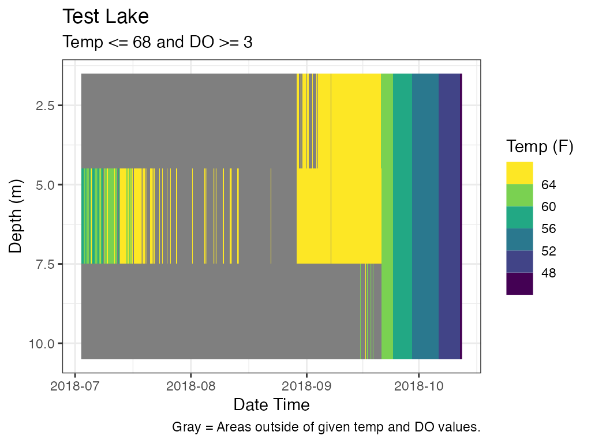
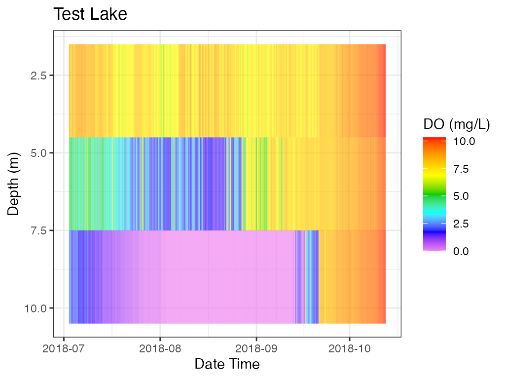
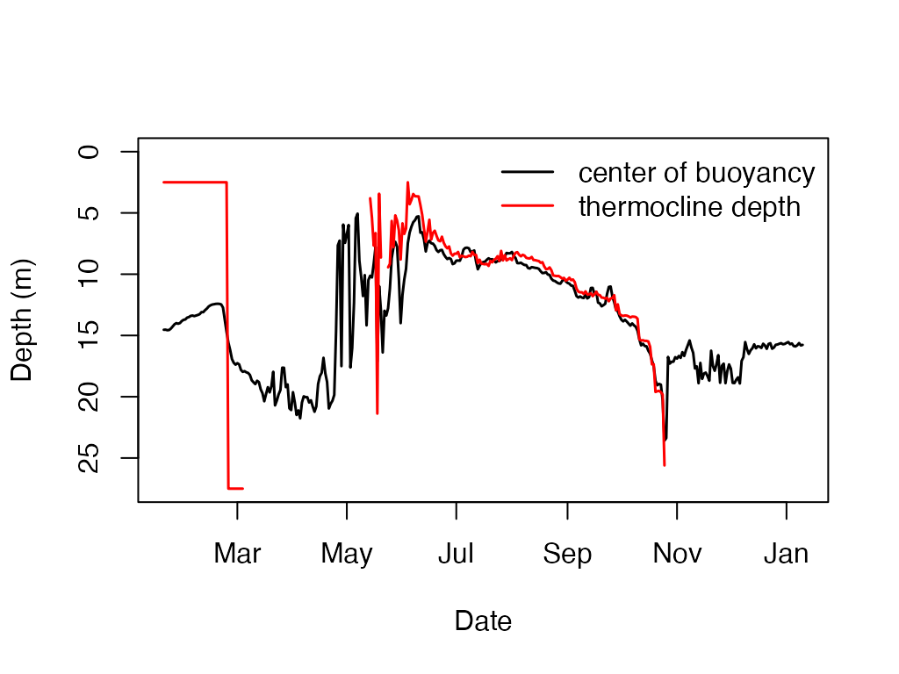
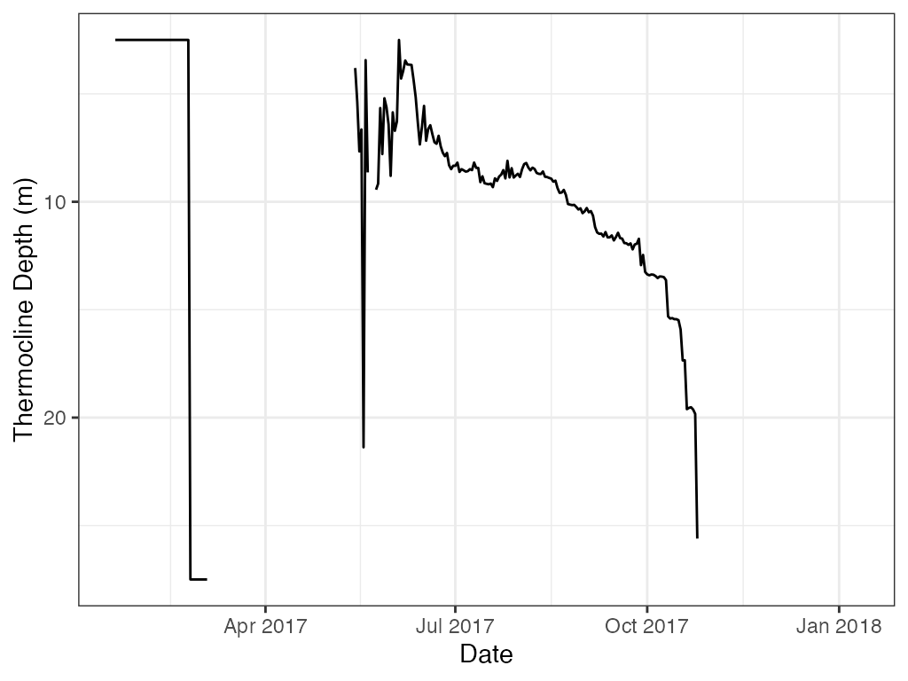

Purpose
Show users how to use functions in LakeMonitoR and those from rLakeAnalyzer.
For rLakeAnalyzer examples, in most cases, are using examples provided by rLakeAnalyzer.
Dates and Times
The core functions of LakeMonitoR assume a date, time, or datetime field that is correctly formated. R uses year-month-day and 24 hour time. The year is 4 digits and both month and day are 2 digit.
A helper function, fun.DateFormat, is provided to help discern the format of a date, time, or datetime field. Only the first record is examined and used to convert an entire column to the R standard format.
It is up to the user to implement the use of this function when using LakeMonitoR in the R console. In the included Shiny app the datetime field selected by the user is checked with the format helper function.
It is advised to use timezone “UTC” in all conversions as this timezone does not observe daylight saving time so there are no potential gaps or overlaps of times in the Spring or Fall.
One note of caution when using Excel to view data files. Excel can auto-fix fields and this can lead to a mix of formats in the same column. If a file is failing with the LakeMonitoR functions it could be a result of a mixture of good and bad date formats.
Formats
# Date
date1 <- "2022-11-05"
date2 <- "11-05-2022"
# Format
format1 <- fun.DateTimeFormat(date1, "date")
format2 <- fun.DateTimeFormat(date2, "date")
# Convert
convert1 <- as.POSIXct(date1, format = format1, tz = "UTC")
convert2 <- as.POSIXct(date2, format = format2, tz = "UTC")
# Display
df_fix <- data.frame(date = c(date1, date2)
, format = c(format1, format2)
, convert = c(convert1, convert2))
str(df_fix)
#> 'data.frame': 2 obs. of 3 variables:
#> $ date : chr "2022-11-05" "11-05-2022"
#> $ format : chr "%Y-%m-%d" "%m-%d-%Y"
#> $ convert: POSIXct, format: "2022-11-05" "2022-11-05"
knitr::kable(df_fix)| date | format | convert |
|---|---|---|
| 2022-11-05 | %Y-%m-%d | 2022-11-05 |
| 11-05-2022 | %m-%d-%Y | 2022-11-05 |
Example
This example can be used when importing any data set to ensure no issues with other functions.
# Data
fn_data <- "Ellis--1.0m_Water_20180524_20180918.csv"
path_data <- file.path(system.file("extdata", package = "LakeMonitoR"), fn_data)
df_data <- read.csv(path_data)
# Change date format
format1 <- fun.DateTimeFormat(df_data$Date.Time, "datetime")
df_data$Date.Time2 <- as.POSIXct(df_data$Date.Time
, format = format1
, tz = "UTC")
# Display
str(df_data)
#> 'data.frame': 2806 obs. of 9 variables:
#> $ SiteID : chr "Ellis" "Ellis" "Ellis" "Ellis" ...
#> $ Date : chr "2018-05-24" "2018-05-24" "2018-05-24" "2018-05-24" ...
#> $ Time : chr "15:01:00" "16:01:00" "17:01:00" "18:01:00" ...
#> $ Date.Time : chr "2018-05-24 15:01" "2018-05-24 16:01" "2018-05-24 17:01" "2018-05-24 18:01" ...
#> $ Water.Temp.C : num 16.5 16.7 16.6 16.7 16.6 ...
#> $ Water.LoggerID: int 20312702 20312702 20312702 20312702 20312702 20312702 20312702 20312702 20312702 20312702 ...
#> $ Water.RowID : int 1 2 3 4 5 6 7 8 9 10 ...
#> $ Depth_m : int 1 1 1 1 1 1 1 1 1 1 ...
#> $ Date.Time2 : POSIXct, format: "2018-05-24 15:01:00" "2018-05-24 16:01:00" ...LakeMonitoR
agg_depth_files
# Data Files
myFile_import <- c("Ellis--1.0m_Water_20180524_20180918.csv"
, "Ellis--3.0m_Water_20180524_20180918.csv")
myFile_export <- "Ellis--Combined_Water_20180524_20180918.csv"
myDir_import <- file.path(system.file("extdata", package = "LakeMonitoR"))
myDir_export <- tempdir()
agg_depth_files(filename_import = myFile_import
, filename_export = myFile_export
, dir_import = myDir_import
, dir_export = myDir_export)daily_depth_means
# Packages
library(xts)
#> Loading required package: zoo
#>
#> Attaching package: 'zoo'
#> The following objects are masked from 'package:base':
#>
#> as.Date, as.Date.numeric
# Lake Data
data <- laketemp
# Filter by any QC fields
data <- data[data$FlagV == "P", ]
# name columns
col_siteid <- "SiteID"
col_datetime <- "Date_Time"
col_depth <- "Depth_m"
col_measure <- "Water_Temp_C"
# run function
data_ddm <- daily_depth_means(data
, col_siteid
, col_datetime
, col_depth
, col_measure)
# summary
summary(data_ddm)
#> Date Depth Measurement
#> Min. :2017-01-19 Min. : 2 Min. : 0.3707
#> 1st Qu.:2017-04-18 1st Qu.: 8 1st Qu.: 2.0038
#> Median :2017-07-16 Median :15 Median : 4.8166
#> Mean :2017-07-16 Mean :15 Mean : 6.1513
#> 3rd Qu.:2017-10-13 3rd Qu.:22 3rd Qu.: 8.5071
#> Max. :2018-01-10 Max. :28 Max. :22.0829lake_summary_stats
# data
data <- laketemp_ddm
# Columns
col_date <- "Date"
col_depth <- "Depth"
col_measure <- "Measurement"
below_threshold <- 2
# Calculate Stratification
df_lss <- lake_summary_stats(data
, col_date
, col_depth
, col_measure
, below_threshold)
# Results
head(df_lss)
#> # A tibble: 6 × 23
#> # Groups: TimeFrame_Value, Depth [6]
#> TimeFra…¹ TimeF…² Depth n ndays mean median min max range sd var
#> <chr> <chr> <dbl> <int> <int> <dbl> <dbl> <dbl> <dbl> <dbl> <dbl> <dbl>
#> 1 AllData AllData 2 357 357 8.50 4.91 0.371 22.1 21.7 7.46 55.6
#> 2 AllData AllData 3 357 357 8.49 4.93 0.413 22.0 21.6 7.39 54.6
#> 3 AllData AllData 4 357 357 8.41 4.91 0.404 21.9 21.5 7.33 53.8
#> 4 AllData AllData 5 357 357 8.32 4.88 0.395 21.8 21.4 7.25 52.6
#> 5 AllData AllData 6 357 357 8.20 4.86 0.389 20.9 20.5 7.12 50.7
#> 6 AllData AllData 7 357 357 8.02 4.87 0.401 19.9 19.5 6.89 47.5
#> # … with 11 more variables: cv <dbl>, q01 <dbl>, q05 <dbl>, q10 <dbl>,
#> # q25 <dbl>, q50 <dbl>, q75 <dbl>, q90 <dbl>, q95 <dbl>, q99 <dbl>,
#> # n_below_2 <dbl>, and abbreviated variable names ¹TimeFrame_Name,
#> # ²TimeFrame_Valueplot_depth
library(LakeMonitoR)
# Data (Test Lake)
data <- laketest
# Column Names
col_datetime <- "Date.Time"
col_depth <- "Depth"
col_measure <- "temp_F"
# Plot Labels
lab_datetime <- "Date Time"
lab_depth <- "Depth (m)"
lab_measure <- "Temperature (F)"
lab_title <- "Test Lake"
# Create Plot
p_profile <- plot_depth(data = data
, col_datetime = col_datetime
, col_depth = col_depth
, col_measure = col_measure
, lab_datetime = lab_datetime
, lab_depth = lab_depth
, lab_measure = lab_measure
, lab_title = lab_title)
# Print Plot
print(p_profile)The function is generic and can plot other variables if present.
# Data (Test Lake)
data <- laketest
# Column Names
col_datetime <- "Date.Time"
col_depth <- "Depth"
col_measure <- "DO_conc"
# Plot Labels
lab_datetime <- "Date Time"
lab_depth <- "Depth (m)"
lab_measure <- "Dissolved Oxygen (mg/L)"
lab_title <- "Test Lake"
# Create Plot
p_profile2 <- plot_depth(data = data
, col_datetime = col_datetime
, col_depth = col_depth
, col_measure = col_measure
, lab_datetime = lab_datetime
, lab_depth = lab_depth
, lab_measure = lab_measure
, lab_title = lab_title)
# Print Plot
print(p_profile2)plot_heatmap
library(LakeMonitoR)
# Data (Test Lake)
data <- laketest
# Column Names
col_datetime <- "Date.Time"
col_depth <- "Depth"
col_measure <- "temp_F"
# Plot Labels
lab_datetime <- "Date Time"
lab_depth <- "Depth (m)"
lab_measure <- "Temperature (F)"
lab_title <- "Test Lake"
line_val <- 2
# Create Plot
p_hm <- plot_heatmap(data = data
, col_datetime = col_datetime
, col_depth = col_depth
, col_measure = col_measure
, lab_datetime = lab_datetime
, lab_depth = lab_depth
, lab_measure = lab_measure
, lab_title = lab_title
, contours = TRUE)
# Print Plot
print(p_hm)
#> Warning: The following aesthetics were dropped during statistical transformation: fill
#> ℹ This can happen when ggplot fails to infer the correct grouping structure in
#> the data.
#> ℹ Did you forget to specify a `group` aesthetic or to convert a numerical
#> variable into a factor?plot_ts
# Data (Test Lake)
data <- laketest_wind
# Column Names
col_datetime <- "Date.Time"
col_measure <- "WSPD"
# Plot Labels
lab_datetime <- "Date Time"
lab_measure <- "Average Wind Speed (m/s)"
lab_title <- "Test Lake"
# Create Plot
p_ts <- plot_ts(data = data
, col_datetime = col_datetime
, col_measure = col_measure
, lab_datetime = lab_datetime
, lab_measure = lab_measure
, lab_title = lab_title)
# Print Plot
print(p_ts)plot_oxythermal
For oxythermal habitat for coldwater fish a plot that shows depths at which suitable oxythermal habitat exists during deployment period. The user can enter thresholds for temperature and dissolved oxygen.
# Data (Test Lake)
data <- laketest
# Column Names
col_datetime <- "Date.Time"
col_depth <- "Depth"
col_temp <- "temp_F"
col_do <- "DO_conc"
# Data values
thresh_temp <- 68
operator_temp <- "<="
thresh_do <- 3
operator_do <- ">="
# Plot Labels
lab_datetime <- "Date Time"
lab_depth <- "Depth (m)"
lab_temp <- "Temp (F)"
lab_title <- "Test Lake"
# Create Plot
p_ot <- plot_oxythermal(data = data
, col_datetime = col_datetime
, col_depth = col_depth
, col_temp = col_temp
, col_do = col_do
, thresh_temp = thresh_temp
, operator_temp= operator_temp
, thresh_do = thresh_do
, operator_do = operator_do
, lab_datetime = lab_datetime
, lab_depth = lab_depth
, lab_temp = lab_temp
, lab_title = lab_title)
## Add Subtitle and Caption
myST <- paste0("Temp ", operator_temp, " ", thresh_temp
, " and DO ", operator_do, " ", thresh_do)
p_ot <- p_ot +
ggplot2::labs(subtitle = myST) +
ggplot2::labs(caption = paste0("Gray = Areas outside of given temp and DO "
, "values."))
print(p_ot)
# For Comparison, heatmaps of Temperature and DO
# heat map, Temp
p_hm_temp <- plot_heatmap(data = data
, col_datetime = col_datetime
, col_depth = col_depth
, col_measure = col_temp
, lab_datetime = lab_datetime
, lab_depth = lab_depth
, lab_measure = lab_temp
, lab_title = lab_title
, contours = FALSE)
print(p_hm_temp)
# heat map, DO
p_hm_do <- plot_heatmap(data = data
, col_datetime = col_datetime
, col_depth = col_depth
, col_measure = col_do
, lab_datetime = lab_datetime
, lab_depth = lab_depth
, lab_measure = "DO (mg/L)"
, lab_title = lab_title
, contours = FALSE)
print(p_hm_do)
# Plot, Combine all 3
gridExtra::grid.arrange(p_ot, p_hm_temp, p_hm_do)Combining Plots
The shiny app combines the depth plot with the heat map and saves it to the Results folder. Combining the plots is not a default feature of the package but can be done with the use of the gridExtra package.
Move legends to the bottom and remove titles to get more space.
library(LakeMonitoR)
# Data (Test Lake)
data <- laketest
# depth----
# Column Names
col_datetime <- "Date.Time"
col_depth <- "Depth"
col_measure <- "DO_conc"
# Plot Labels
lab_datetime <- "Date Time"
lab_depth <- "Depth (m)"
lab_measure <- "Dissolved Oxygen (mg/L)"
lab_title <- "Test Lake"
# Create Plot
p_profile <- plot_depth(data = data
, col_datetime = col_datetime
, col_depth = col_depth
, col_measure = col_measure
, lab_datetime = lab_datetime
, lab_depth = lab_depth
, lab_measure = lab_measure
, lab_title = NA)
# heat map----
# Data (Test Lake)
data <- laketest
# Column Names
col_datetime <- "Date.Time"
col_depth <- "Depth"
col_measure <- "temp_F"
# Plot Labels
lab_datetime <- "Date Time"
lab_depth <- "Depth (m)"
lab_measure <- "Temperature (F)"
lab_title <- "Test Lake"
line_val <- 2
# Create Plot----
p_hm <- plot_heatmap(data = data
, col_datetime = col_datetime
, col_depth = col_depth
, col_measure = col_measure
, lab_datetime = lab_datetime
, lab_depth = lab_depth
, lab_measure = lab_measure
, lab_title = NA
, contours = TRUE)
# Change legend location
p_profile <- p_profile + ggplot2::theme(legend.position = "bottom") +
ggplot2::geom_hline(yintercept = 2
, color = "red"
, linetype = "dashed"
, size = 1.5)
#> Warning: Using `size` aesthetic for lines was deprecated in ggplot2 3.4.0.
#> ℹ Please use `linewidth` instead.
p_hm <- p_hm + ggplot2::theme(legend.position = "bottom")
# # plot, Wind
p_ts <- plot_ts(data = laketest_wind
, col_datetime = col_datetime
, col_measure = "WSPD"
, lab_datetime = lab_datetime
, lab_measure = "Average Wind (m/s)"
, lab_title = NA)
# Combine 2
p_combo_2 <- gridExtra::grid.arrange(p_hm, p_profile)
#> Warning: The following aesthetics were dropped during statistical transformation: fill
#> ℹ This can happen when ggplot fails to infer the correct grouping structure in
#> the data.
#> ℹ Did you forget to specify a `group` aesthetic or to convert a numerical
#> variable into a factor?
# Combine 3
p_combo_3 <- gridExtra::grid.arrange(p_hm, p_profile, p_ts)
#> Warning: The following aesthetics were dropped during statistical transformation: fill
#> ℹ This can happen when ggplot fails to infer the correct grouping structure in
#> the data.
#> ℹ Did you forget to specify a `group` aesthetic or to convert a numerical
#> variable into a factor?stratification
Stratification is calculated as greater than or equal to a 1 degree C difference over 1-m. Unless there are only 2 measurements then stratification is calculated as greater than or equal to a 1 degree C difference (i.e., depth is not considered).
The example below calculates stratification on the entire data set and then again with only the top and bottom measurements. Using only the top and bottom measurements results in more days of stratification and has 1 more event.
library(LakeMonitoR)
## Example 1, entire data set
# data
data <- laketemp_ddm
# Columns
col_date <- "Date"
col_depth <- "Depth"
col_measure <- "Measurement"
# Calculate Stratification
ls_strat <- stratification(data
, col_date
, col_depth
, col_measure
, min_days = 1 )
#> Warning in stratification(data, col_date, col_depth, col_measure, min_days = 1):
#> NAs introduced by coercion
# Results, Stratification Dates
head(ls_strat$Stratification_Dates)
#> Date Stratified_1
#> 1 2017-01-19 FALSE
#> 2 2017-01-20 FALSE
#> 3 2017-01-21 FALSE
#> 4 2017-01-22 FALSE
#> 5 2017-01-23 FALSE
#> 6 2017-01-24 FALSE
# Results, Stratification Events
ls_strat$Stratification_Events
#> Start_Date End_Date Year Time_Span
#> 1 2017-06-05 2017-10-16 2017 133 days
# Results, Stratification Plot
p_strat <- ls_strat$Stratification_Plot
p_strat <- p_strat + ggplot2::labs(caption = paste0("Stratification >= "
, "1 deg C difference over 1-m"))
print(p_strat)
#~~~~~~~~~~~~
## Example 2, only top and bottom measurement
# data
data <- laketemp_ddm
min_depth <- min(data[, col_depth], na.rm = TRUE)
max_depth <- max(data[, col_depth], na.rm = TRUE)
data_tb <- data[data[, col_depth] == min_depth |
data[, col_depth] == max_depth, ]
# Columns
col_date <- "Date"
col_depth <- "Depth"
col_measure <- "Measurement"
# Calculate Stratification
ls_strat_tb <- stratification(data_tb
, col_date
, col_depth
, col_measure
, min_days = 1 )
#> Warning in stratification(data_tb, col_date, col_depth, col_measure, min_days =
#> 1): NAs introduced by coercion
# Results, Stratification Dates
head(ls_strat_tb$Stratification_Dates)
#> Date Stratified_1
#> 1 2017-01-19 FALSE
#> 2 2017-01-20 FALSE
#> 3 2017-01-21 FALSE
#> 4 2017-01-22 FALSE
#> 5 2017-01-23 FALSE
#> 6 2017-01-24 FALSE
# Results, Stratification Events
ls_strat_tb$Stratification_Events
#> Start_Date End_Date Year Time_Span
#> 1 2017-05-14 2017-05-20 2017 6 days
#> 2 2017-05-24 2017-10-25 2017 154 days
# Results, Stratification Plot
p_strat_tb <- ls_strat_tb$Stratification_Plot
p_strat_tb <- p_strat_tb + ggplot2::labs(caption = paste0("Stratification >="
, " 1 deg C (only 2 depths)"))
print(p_strat_tb)## TDOx Temperature at Dissolved Oxygen x value.
# data
data <- laketest
# Columns
col_date <- "Date.Time"
col_depth <- "Depth"
col_temp <- "temp_F"
col_do <- "DO_conc"
do_x_val <- 3
tdox_3 <- tdox(data = data
, col_date = col_date
, col_depth = col_depth
, col_temp = col_temp
, col_do = col_do
, do_x_val = do_x_val)
head(tdox_3)
#> # A tibble: 6 × 6
#> TimeFrame_Name TimeFrame_Value TDO_x_value min mean max
#> <chr> <chr> <dbl> <dbl> <dbl> <dbl>
#> 1 Year 2018 3 50.9 59.9 64.2
#> 2 Date 2018-07-02 3 52.6 52.6 52.6
#> 3 Date 2018-07-03 3 53.5 53.5 53.5
#> 4 Date 2018-07-04 3 53.7 53.7 53.7
#> 5 Date 2018-07-05 3 54.4 54.4 54.4
#> 6 Date 2018-07-06 3 54.8 54.8 54.8Example plot of a single depth using base R graphics.
Temperature is in black and Dissolved Oxygen is in blue.
Dotted lines are DO = 3 and Temperature = 53.7 (TDO3 value).
# Data
data <- laketest
# Columns
col_date <- "Date.Time"
col_depth <- "Depth"
col_temp <- "temp_F"
col_do <- "DO_conc"
do_x_val <- 3
df_plot <- data[data[, "Date.Time"] == "2018-07-03 12:00", ]
tdox_3_plot <- tdox(data = df_plot
, col_date = col_date
, col_depth = col_depth
, col_temp = col_temp
, col_do = col_do
, do_x_val = do_x_val)
knitr::kable(tdox_3_plot)| TimeFrame_Name | TimeFrame_Value | TDO_x_value | min | mean | max |
|---|---|---|---|---|---|
| Year | 2018 | 3 | 53.6602 | 53.6602 | 53.6602 |
| Date | 2018-07-03 | 3 | 53.6602 | 53.6602 | 53.6602 |
# Plot
## Temp, x-bottom, circles
plot(df_plot$temp_F, df_plot$Depth, col = "black"
, ylim = rev(range(df_plot$Depth))
, xlab = "Temperature (F)", ylab = "Depth (m)")
lines(df_plot$temp_F, df_plot$Depth, col = "black")
abline(v = 53.66, col = "black", lty = 3, lwd = 2)
## plot on top of existing plot
par(new=TRUE)
## Add DO
plot(df_plot$DO_conc, df_plot$Depth, col = "blue", pch = 17
, ylim = rev(range(df_plot$Depth))
, xaxt = "n", yaxt = "n", xlab = NA, ylab = NA)
lines(df_plot$DO_conc, df_plot$Depth, col = "blue")
axis(side = 3, col.axis = "blue", col.lab = "blue")
mtext("Dissolved Oxygen (mg/L)", side = 3, line = 3, col = "blue")
abline(v = 3, col = "blue", lty = 3, lwd = 2)
## Legend
legend("bottomright"
, c("Temperature", "Temp = 53.66 @ DO = 3", "Dissolved Oxygen", "DO = 3")
, col = c("black", "black", "blue", "blue")
, pch = c(21, NA, 17, NA)
, lty = c(1, 3, 1, 3)
, lwd = c(1, 2, 1, 2))export_rLakeAnalyzer
Reorganize file for use with rLakeAnalyzer package.
library(LakeMonitoR)
# Convert Data for use with rLakeAnalyzer
# Data
data <- laketemp_ddm
# Columns, date listed first
col_depth <- "Depth"
col_data <- c("Date", "Measurement")
col_rLA <- c("datetime", "wtr")
# Run function
df_rLA <- export_rLakeAnalyzer(data, col_depth, col_data, col_rLA)
#
str(df_rLA)
#> 'data.frame': 357 obs. of 28 variables:
#> $ datetime: Date, format: "2017-01-19" "2017-01-20" ...
#> $ wtr_2 : num 0.961 0.967 0.973 0.973 0.969 ...
#> $ wtr_3 : num 1.07 1.08 1.08 1.09 1.1 ...
#> $ wtr_4 : num 1.1 1.1 1.1 1.11 1.12 ...
#> $ wtr_5 : num 1.14 1.14 1.14 1.15 1.16 ...
#> $ wtr_6 : num 1.18 1.19 1.19 1.2 1.21 ...
#> $ wtr_7 : num 1.25 1.25 1.26 1.27 1.27 ...
#> $ wtr_8 : num 1.33 1.34 1.34 1.35 1.35 ...
#> $ wtr_9 : num 1.4 1.41 1.42 1.42 1.42 ...
#> $ wtr_10 : num 1.45 1.46 1.46 1.47 1.47 ...
#> $ wtr_11 : num 1.48 1.49 1.49 1.5 1.52 ...
#> $ wtr_12 : num 1.56 1.57 1.58 1.59 1.61 ...
#> $ wtr_13 : num 1.65 1.66 1.69 1.69 1.71 ...
#> $ wtr_14 : num 1.71 1.72 1.75 1.75 1.76 ...
#> $ wtr_15 : num 1.74 1.76 1.78 1.78 1.79 ...
#> $ wtr_16 : num 1.75 1.77 1.78 1.78 1.8 ...
#> $ wtr_17 : num 1.79 1.8 1.8 1.81 1.83 ...
#> $ wtr_18 : num 1.85 1.86 1.86 1.87 1.88 ...
#> $ wtr_19 : num 1.9 1.9 1.9 1.91 1.91 ...
#> $ wtr_20 : num 1.93 1.93 1.93 1.93 1.93 ...
#> $ wtr_21 : num 1.91 1.91 1.91 1.91 1.91 ...
#> $ wtr_22 : num 1.86 1.86 1.86 1.86 1.86 ...
#> $ wtr_23 : num 1.91 1.91 1.91 1.91 1.91 ...
#> $ wtr_24 : num 2.06 2.07 2.07 2.07 2.08 ...
#> $ wtr_25 : num 2.16 2.18 2.18 2.18 2.19 ...
#> $ wtr_26 : num 2.22 2.23 2.24 2.24 2.25 ...
#> $ wtr_27 : num 2.33 2.35 2.35 2.36 2.37 ...
#> $ wtr_28 : num 2.5 2.51 2.52 2.54 2.55 ...
## Not run:
# Save
#write.csv(df_rLA, file.path(tempdir(), "example_rLA.csv"), row.names = FALSE)rLakeAnalyzer
After exporting file format for rLakeAnalyzer can use the functions from that package.
Help
#> approx.bathy : function (Zmax, lkeArea, Zmean = NULL, method = "cone", zinterval = 1,
#> depths = seq(0, Zmax, by = zinterval))
#> buoyancy.freq : function (wtr, depths)
#> center.buoyancy : function (wtr, depths)
#> depth.filter : function (z0, run_length = 20, index = FALSE)
#> epi.temperature : function (wtr, depths, bthA, bthD)
#> get.offsets : function (data)
#> hypo.temperature : function (wtr, depths, bthA, bthD)
#> internal.energy : function (wtr, depths, bthA, bthD)
#> lake.number : function (bthA, bthD, uStar, St, metaT, metaB, averageHypoDense)
#> lake.number.plot : function (wtr, wnd, wh, bth)
#> layer.density : function (top, bottom, wtr, depths, bthA, bthD, sal = wtr * 0)
#> layer.temperature : function (top, bottom, wtr, depths, bthA, bthD)
#> load.bathy : function (fPath)
#> load.ts : function (fPath, tz = "GMT")
#> meta.depths : function (wtr, depths, slope = 0.1, seasonal = TRUE, mixed.cutoff = 1)
#> schmidt.plot : function (wtr, bth)
#> schmidt.stability : function (wtr, depths, bthA, bthD, sal = 0)
#> thermo.depth : function (wtr, depths, Smin = 0.1, seasonal = TRUE, index = FALSE, mixed.cutoff = 1)
#> ts.buoyancy.freq : function (wtr, at.thermo = TRUE, na.rm = FALSE, ...)
#> ts.center.buoyancy : function (wtr, na.rm = FALSE)
#> ts.internal.energy : function (wtr, bathy, na.rm = FALSE)
#> ts.lake.number : function (wtr, wnd, wnd.height, bathy, seasonal = TRUE)
#> ts.layer.temperature : function (wtr, top, bottom, bathy, na.rm = FALSE)
#> ts.meta.depths : function (wtr, slope = 0.1, na.rm = FALSE, ...)
#> ts.schmidt.stability : function (wtr, bathy, na.rm = FALSE)
#> ts.thermo.depth : function (wtr, Smin = 0.1, na.rm = FALSE, ...)
#> ts.uStar : function (wtr, wnd, wnd.height, bathy, seasonal = TRUE)
#> ts.wedderburn.number : function (wtr, wnd, wnd.height, bathy, Ao, seasonal = TRUE)
#> uStar : function (wndSpeed, wndHeight, averageEpiDense)
#> water.density : function (wtr, sal = wtr * 0)
#> wedderburn.number : function (delta_rho, metaT, uSt, Ao, AvHyp_rho)
#> whole.lake.temperature : function (wtr, depths, bthA, bthD)
#> wtr.heat.map : function (wtr, ...)
#> wtr.heatmap.layers : function (wtr, ...)
#> wtr.layer : function (data, depth, measure, thres = 0.1, z0 = 2.5, zmax = 150, nseg = "unconstrained")
#> wtr.lineseries : function (wtr, ylab = "Temperature C", ...)
#> wtr.plot.temp : function (wtr, ...)approx.bathy
Estimate hypsography curve.
Voldev.ex <- approx.bathy(Zmax = 25, Zmean = 12, lkeArea = 39400000, method = "voldev")
Voldevshallow.ex <- approx.bathy(Zmax = 25, Zmean = 6, lkeArea = 39400000, method = "voldev")
Cone.ex <- approx.bathy(Zmax = 25, lkeArea = 39400000, method = "cone")
# plot depth-area curves
plot(Cone.ex$depths ~ Cone.ex$Area.at.z, xlab = "Area (m^3)", ylab = "Depth (m)")
points(Voldev.ex$depths ~ Voldev.ex$Area.at.z, col = "red")
points(Voldevshallow.ex$depths ~ Voldevshallow.ex$Area.at.z, col = "blue")buoyancy.freq
Calculate buoyancy frequency.
# A vector of water temperatures
wtr <- c(22.51, 22.42, 22.4, 22.4, 22.4, 22.36, 22.3, 22.21, 22.11, 21.23, 16.42,
15.15, 14.24, 13.35, 10.94, 10.43, 10.36, 9.94, 9.45, 9.1, 8.91, 8.58, 8.43)
#A vector defining the depths
depths <- c(0, 0.5, 1, 1.5, 2, 3, 4, 5, 6, 7, 8, 9, 10, 11, 12, 13, 14, 15, 16,
17, 18, 19, 20)
b.f <- buoyancy.freq(wtr, depths)
plot(b.f, attr(b.f, 'depths'), type='b'
, ylab='Depth', xlab='Buoyancy Frequency'
, ylim=c(max(depths), min(depths)))center.buoyancy
Calculate the center of buoyancy.
# A vector of water temperatures
wtr <- c(22.51, 22.42, 22.4, 22.4, 22.4, 22.36, 22.3, 22.21, 22.11, 21.23, 16.42,
15.15, 14.24, 13.35, 10.94, 10.43, 10.36, 9.94, 9.45, 9.1, 8.91, 8.58, 8.43)
#A vector defining the depths
depths <- c(0, 0.5, 1, 1.5, 2, 3, 4, 5, 6, 7, 8, 9, 10, 11, 12, 13, 14, 15, 16,
17, 18, 19, 20)
c.b <- center.buoyancy(wtr, depths)
c.b
#> [1] 8.885765lake.number
Calculate Lake Number.
bthA <- c(1000,900,864,820,200,10)
bthD <- c(0,2.3,2.5,4.2,5.8,7)
uStar <- c(0.0032,0.0024)
St <- c(140,153)
metaT <- c(1.34,1.54)
metaB <- c(4.32,4.33)
averageHypoDense <- c(999.3,999.32)
cat('Lake Number for input vector is: ')
#> Lake Number for input vector is:
cat(lake.number( bthA, bthD, uStar, St, metaT, metaB, averageHypoDense) )
#> 472.136 951.3076layer.density
Returns the average density of a layer between two depths.
top <- 2
bottom <- 6
wtr <- c(25.2,25.1,24.1,22.0,19.8,15.3,12.0,11.1)
depths <- c(0,1,2,3,4,5,6,7)
bthA <- c(10000,8900,5000,3500,2000,1000,300,10)
bthD <- c(0,1,2,3,4,5,6,7)
layer.density(top,bottom,wtr,depths,bthA,bthD)
#> [1] 997.9737layer.temperature
Returns the average temperature of a layer between two depths.
# Supply input data
top <- 2
bottom <- 6
wtr <- c(25.2,25.1,24.1,22.0,19.8,15.3,12.0,11.1)
depths <- c(0,1,2,3,4,5,6,7)
bthA <- c(10000,8900,5000,3500,2000,1000,300,10)
bthD <- c(0,1,2,3,4,5,6,7)
#Return the average temperature of the water column between 2 and 6 meters.
layer.temperature(top,bottom,wtr,depths,bthA,bthD)
#> [1] 21.02678meta.depths
Calculate the Top and Bottom Depths of the Metalimnion.
To get the thickness of Metalimnion subtract the two values.
wtr = c(22.51, 22.42, 22.4, 22.4, 22.4, 22.36, 22.3, 22.21, 22.11, 21.23, 16.42,
15.15, 14.24, 13.35, 10.94, 10.43, 10.36, 9.94, 9.45, 9.1, 8.91, 8.58, 8.43)
depths = c(0, 0.5, 1, 1.5, 2, 3, 4, 5, 6, 7, 8, 9, 10, 11, 12, 13, 14, 15, 16,
17, 18, 19, 20)
m.d = meta.depths(wtr, depths, slope=0.1, seasonal=FALSE)
cat('The top depth of the metalimnion is:', m.d[1])
#> The top depth of the metalimnion is: 5.943727
cat('The bottom depth of the metalimnion is:', m.d[2])
#> The bottom depth of the metalimnion is: 11.0914
cat("The thickness of the metalimnion is: ", m.d[2] - m.d[1])
#> The thickness of the metalimnion is: 5.147674thermo.depth
Calculate depth of the thermocline from a temperature profile
# A vector of water temperatures
wtr <- c(22.51, 22.42, 22.4, 22.4, 22.4, 22.36, 22.3, 22.21, 22.11, 21.23, 16.42,
15.15, 14.24, 13.35, 10.94, 10.43, 10.36, 9.94, 9.45, 9.1, 8.91, 8.58, 8.43)
#A vector defining the depths
depths <- c(0, 0.5, 1, 1.5, 2, 3, 4, 5, 6, 7, 8, 9, 10, 11, 12, 13, 14, 15, 16,
17, 18, 19, 20)
t.d <- thermo.depth(wtr, depths, seasonal=FALSE)
cat('The thermocline depth is:', t.d)
#> The thermocline depth is: 7.502121ts.buoyancy.freq
Calculate the buoyancy (Brunt-Vaisala) frequency for a temperature profile.
#Get the path for the package example file included
wtr.path <- system.file('extdata'
, 'Sparkling.daily.wtr'
, package="rLakeAnalyzer")
#Load data for example lake, Sparkilng Lake, Wisconsin.
sp.wtr <- load.ts(wtr.path)
N2 <- ts.buoyancy.freq(sp.wtr, seasonal=FALSE)
SN2 <- ts.buoyancy.freq(sp.wtr, seasonal=TRUE)
plot(N2, type='l', ylab='Buoyancy Frequency', xlab='Date')
lines(SN2, col='red')ts.buoyancy.freq, LakeMonitoR
Using LakeMonitoR data.
library(LakeMonitoR)
# Convert Data for use with rLakeAnalyzer
# Data
data <- laketemp_ddm
# Columns, date listed first
col_depth <- "Depth"
col_data <- c("Date", "Measurement")
col_rLA <- c("datetime", "wtr")
# Run function
df_rLA <- export_rLakeAnalyzer(data, col_depth, col_data, col_rLA)
# Calculate
N2 <- ts.buoyancy.freq(df_rLA, seasonal=FALSE)
SN2 <- ts.buoyancy.freq(df_rLA, seasonal=TRUE)
knitr::kable(head(N2))| datetime | n2 |
|---|---|
| 2017-01-19 | 5.38e-05 |
| 2017-01-20 | 5.33e-05 |
| 2017-01-21 | 5.38e-05 |
| 2017-01-22 | 5.68e-05 |
| 2017-01-23 | 6.34e-05 |
| 2017-01-24 | 6.77e-05 |
| datetime | n2 |
|---|---|
| 2017-01-19 | 5.38e-05 |
| 2017-01-20 | 5.33e-05 |
| 2017-01-21 | 5.38e-05 |
| 2017-01-22 | 5.68e-05 |
| 2017-01-23 | 6.34e-05 |
| 2017-01-24 | 6.77e-05 |
ts.center.buoyancy
Calculates the center of buoyancy for multiple temperature profiles.
#Get the path for the package example file included
wtr.path <- system.file('extdata', 'Sparkling.daily.wtr', package="rLakeAnalyzer")
#Load data for example lake, Sparkilng Lake, Wisconsin.
sp.wtr <- load.ts(wtr.path)
#calculate and plot the thermocline depth
t.d <- ts.thermo.depth(sp.wtr)
center.N2 = ts.center.buoyancy(sp.wtr)
plot(center.N2, type='l', ylab='Depth (m)', xlab='Date', ylim=c(19,0), lwd = 1.5)
lines(t.d, type='l', col='red', lwd = 1.5)
legend(x = t.d[3,1], y = .25,
c('center of buoyancy','thermocline depth'),
lty=c(1,1),
lwd=c(1.5,1.5),col=c("black","red"), bty = "n")
ts.center.buoyancy, LakeMonitoR
Using LakeMonitoR data.
library(LakeMonitoR)
# Convert Data for use with rLakeAnalyzer
# Data
data <- laketemp_ddm
# Columns, date listed first
col_depth <- "Depth"
col_data <- c("Date", "Measurement")
col_rLA <- c("datetime", "wtr")
# Run function
df_rLA <- export_rLakeAnalyzer(data, col_depth, col_data, col_rLA)
# Calculate
t.d <- ts.thermo.depth(df_rLA)
center.N2 = ts.center.buoyancy(df_rLA)
knitr::kable(head(center.N2))| datetime | cent.n2 |
|---|---|
| 2017-01-19 | 14.53531 |
| 2017-01-20 | 14.52814 |
| 2017-01-21 | 14.56947 |
| 2017-01-22 | 14.55145 |
| 2017-01-23 | 14.43304 |
| 2017-01-24 | 14.26047 |
plot_cb_y_max <- max(max(center.N2[, 2], na.rm = TRUE)
, max(t.d[, 2], na.rm = TRUE)
, na.rm = TRUE)
plot(center.N2
, type = 'l'
, ylab = 'Depth (m)'
, xlab = 'Date'
, ylim = c(plot_cb_y_max, 0)
, lwd = 1.5)
lines(t.d, type = 'l', col = 'red', lwd = 1.5)
legend("topright",
c('center of buoyancy','thermocline depth'),
lty = c(1, 1),
lwd = c(1.5, 1.5), col = c("black","red"), bty = "n")
ts.layer.temperature
Calculate volume-weighted average water temperature across a range of depths for a timeseries.
#Get the path for the package example file included
wtr.path <- system.file('extdata', 'Sparkling.daily.wtr', package="rLakeAnalyzer")
bathy.path <- system.file('extdata', 'Sparkling.bth', package="rLakeAnalyzer")
#Load data for example lake, Sparkilng lake, in Wisconsin.
sp.wtr <- load.ts(wtr.path)
sp.bathy <- load.bathy(bathy.path)
l.t <- ts.layer.temperature(sp.wtr, 0, 18, sp.bathy)
plot(l.t$datetime, l.t$layer.temp, type='l',
ylab='Volumetrically averaged lake temperature', xlab='Date')ts.meta.depths
Calculate physical indices for a timeseries.
#Get the path for the package example file included
exampleFilePath <- system.file('extdata'
, 'Sparkling.daily.wtr'
, package="rLakeAnalyzer")
#Load
sparkling.temp <- load.ts(exampleFilePath)
# Calculate and plot the metalimnion depths
m.d <- ts.meta.depths(sparkling.temp)
m.d$thickness <- m.d$bottom - m.d$top
knitr::kable(m.d[1:10, ])| datetime | top | bottom | thickness |
|---|---|---|---|
| 2009-05-02 10:00:00 | 7.543954 | 7.543954 | 0.0000000 |
| 2009-05-03 10:00:00 | 7.488136 | 7.488136 | 0.0000000 |
| 2009-05-04 10:00:00 | 7.259722 | 7.259722 | 0.0000000 |
| 2009-05-05 10:00:00 | 4.585259 | 4.585259 | 0.0000000 |
| 2009-05-06 10:00:00 | 6.878275 | 6.878275 | 0.0000000 |
| 2009-05-07 10:00:00 | 2.386936 | 2.386936 | 0.0000000 |
| 2009-05-08 10:00:00 | 2.533029 | 3.174465 | 0.6414363 |
| 2009-05-09 10:00:00 | 3.209228 | 4.311154 | 1.1019260 |
| 2009-05-10 10:00:00 | 3.534072 | 4.543989 | 1.0099178 |
| 2009-05-11 10:00:00 | 3.769027 | 4.788044 | 1.0190164 |
plot(m.d$datetime
, m.d$top
, type='l'
, ylab='Meta Depths (m)'
, xlab='Date'
, col='blue')
lines(m.d$datetime, m.d$bottom, col='red')
# ggplot
ggplot2::ggplot(data = m.d, ggplot2::aes(x = datetime, y = top)) +
ggplot2::geom_line(color = "blue", na.rm = TRUE) +
ggplot2::labs(x = "Date", y = "Meta Depths (m)") +
ggplot2::theme_bw() +
ggplot2::geom_line(data = m.d
, ggplot2::aes(x = datetime, y = bottom)
, color = "red"
, na.rm = TRUE)ts.meta.depths, LakeMonitoR
Using LakeMonitoR data.
Then calculate for epilimnion and hypolimnion temp difference.
Red is hypolimnion and blue is metalimnion.
library(LakeMonitoR)
library(dplyr)
#>
#> Attaching package: 'dplyr'
#> The following objects are masked from 'package:xts':
#>
#> first, last
#> The following objects are masked from 'package:stats':
#>
#> filter, lag
#> The following objects are masked from 'package:base':
#>
#> intersect, setdiff, setequal, union
library(tidyr)
# Convert Data for use with rLakeAnalyzer
# Data
data <- laketemp_ddm
# Columns, date listed first
col_depth <- "Depth"
col_data <- c("Date", "Measurement")
col_rLA <- c("datetime", "wtr")
# Run function
df_rLA <- export_rLakeAnalyzer(data, col_depth, col_data, col_rLA)
# Calculate
m.d <- ts.meta.depths(df_rLA)
m.d$thickness <- m.d$bottom - m.d$top
knitr::kable(m.d[1:10, ])| datetime | top | bottom | thickness |
|---|---|---|---|
| 2017-01-19 | 2.5 | 2.5 | 0 |
| 2017-01-20 | 2.5 | 2.5 | 0 |
| 2017-01-21 | 2.5 | 2.5 | 0 |
| 2017-01-22 | 2.5 | 2.5 | 0 |
| 2017-01-23 | 2.5 | 2.5 | 0 |
| 2017-01-24 | 2.5 | 2.5 | 0 |
| 2017-01-25 | 2.5 | 2.5 | 0 |
| 2017-01-26 | 2.5 | 2.5 | 0 |
| 2017-01-27 | 2.5 | 2.5 | 0 |
| 2017-01-28 | 2.5 | 2.5 | 0 |
# ggplot
ggplot2::ggplot(data = m.d, ggplot2::aes(x = datetime, y = top)) +
ggplot2::geom_line(color = "blue", na.rm = TRUE) +
ggplot2::labs(x = "Date", y = "Meta Depths (m)") +
ggplot2::theme_bw() +
ggplot2::geom_line(data = m.d
, ggplot2::aes(x = datetime, y = bottom)
, color = "red"
, na.rm = TRUE) +
ggplot2::scale_y_reverse()
# temp diff epi and hypo
df_merge <- merge(data, m.d, by.x = "Date", by.y = "datetime")
df_merge[, "Epi"] <- ifelse(df_merge[, "Depth"] < df_merge[, "top"], TRUE, FALSE)
df_merge[, "Meta"] <- NA
df_merge[, "Hypo"] <- ifelse(df_merge[, "Depth"] > df_merge[, "bottom"], TRUE, FALSE)
df_merge[, "Meta"] <- ifelse(df_merge[, "Epi"] + df_merge[, "Hypo"] == 0, TRUE, FALSE)
df_merge[, "Layer"] <- ifelse(df_merge[, "Epi"] == TRUE
, "Epi"
, ifelse(df_merge[, "Meta"] == TRUE
, "Meta"
, ifelse(df_merge[, "Hypo"] == TRUE
, "Hypo", NA)))
col_datetime <- "Date"
col_depth <- "Depth"
col_measure <- "Measurement"
col_layer <- "Layer"
df_merge[, "Layer"] <- factor(df_merge[, "Layer"]
, levels = c("Epi", "Meta", "Hypo", NA))
stats_layers <- df_merge %>%
dplyr::group_by(.data[[col_datetime]], .data[[col_layer]]) %>%
dplyr::summarize(.groups = "keep"
#, groupname = col_datetime
, n = length(.data[[col_measure]])
, ndays = length(unique(.data[[col_datetime]]))
, mean = mean(.data[[col_measure]], na.rm = TRUE)
, median = stats::median(.data[[col_measure]]
, na.rm = TRUE)
, min = min(.data[[col_measure]], na.rm = TRUE)
, max = max(.data[[col_measure]], na.rm = TRUE)
, range = max - min
, sd = stats::sd(.data[[col_measure]], na.rm = TRUE)
, var = stats::var(.data[[col_measure]], na.rm = TRUE)
, cv = sd/mean
, q01 = stats::quantile(.data[[col_measure]]
, probs = .01
, na.rm = TRUE)
, q05 = stats::quantile(.data[[col_measure]]
, probs = .05
, na.rm = TRUE)
, q10 = stats::quantile(.data[[col_measure]]
, probs = .10
, na.rm = TRUE)
, q25 = stats::quantile(.data[[col_measure]]
, probs = .25
, na.rm = TRUE)
, q50 = stats::quantile(.data[[col_measure]]
, probs = .50
, na.rm = TRUE)
, q75 = stats::quantile(.data[[col_measure]]
, probs = .75
, na.rm = TRUE)
, q90 = stats::quantile(.data[[col_measure]]
, probs = .90
, na.rm = TRUE)
, q95 = stats::quantile(.data[[col_measure]]
, probs = .95
, na.rm = TRUE)
, q99 = stats::quantile(.data[[col_measure]]
, probs = .99
, na.rm = TRUE)
#, n_below = sum(.data[["below"]], na.rm = TRUE)
)
# pivot wider, min layer temp
layers_min <- pivot_wider(stats_layers
, id_cols = "Date"
, names_from = "Layer"
, names_sort = TRUE
, values_from = "min")
layers_min[, "diff_EH"] <- layers_min[, "Hypo"] - layers_min[, "Epi"]
head(layers_min)
#> # A tibble: 6 × 6
#> # Groups: Date [6]
#> Date Epi Meta Hypo `NA` diff_EH
#> <date> <dbl> <dbl> <dbl> <dbl> <dbl>
#> 1 2017-01-19 0.961 NA 1.07 NA 0.110
#> 2 2017-01-20 0.967 NA 1.08 NA 0.109
#> 3 2017-01-21 0.973 NA 1.08 NA 0.111
#> 4 2017-01-22 0.973 NA 1.09 NA 0.117
#> 5 2017-01-23 0.969 NA 1.10 NA 0.131
#> 6 2017-01-24 0.960 NA 1.10 NA 0.139
plot(layers_min$diff_EH, type = "l")
ggplot2::ggplot(data = layers_min, ggplot2::aes(x = Date, y = diff_EH)) +
ggplot2::geom_line(color = "black", na.rm = TRUE) +
ggplot2::labs(x = "Date"
, y = "Temperature Difference (C)"
, title = "Comparison of Epilimnion and Hypolimnion") +
ggplot2::theme_bw() 
ts.schmidt.stability
Calculate physical indices for a timeseries.
# No Examplets.schmidt.stability, LakeMonitor
Using LakeMonitoR data. Requires bathymetry data.
library(LakeMonitoR)
# Convert Data for use with rLakeAnalyzer
# Data
data <- laketemp_ddm
bathy <- NA
# Columns, date listed first
col_depth <- "Depth"
col_data <- c("Date", "Measurement")
col_rLA <- c("datetime", "wtr")
# Run function
df_rLA <- export_rLakeAnalyzer(data, col_depth, col_data, col_rLA)
# Calculate
s.s <- ts.schmidt.stability(df_rLA, bathy)ts.thermo.depth
Calculate physical indices for a timeseries.
#Get the path for the package example file included
exampleFilePath <- system.file('extdata', 'Sparkling.daily.wtr', package="rLakeAnalyzer")
#Load
sparkling.temp <- load.ts(exampleFilePath)
#calculate and plot the thermocline depth
t.d <- ts.thermo.depth(sparkling.temp)
plot(t.d$datetime, t.d$thermo.depth, type='l', ylab='Thermocline Depth (m)', xlab='Date')
# ggplot
ggplot2::ggplot(data = t.d, ggplot2::aes(x = datetime, y = thermo.depth)) +
ggplot2::geom_line(na.rm = TRUE) +
ggplot2::labs(x = "Date", y = "Thermocline Depth (m)") +
ggplot2::theme_bw()ts.thermo.depth, LakeMonitoR
Using LakeMonitoR data.
For ggplot reverse the y-axis.
library(LakeMonitoR)
# Convert Data for use with rLakeAnalyzer
# Data
data <- laketemp_ddm
# Columns, date listed first
col_depth <- "Depth"
col_data <- c("Date", "Measurement")
col_rLA <- c("datetime", "wtr")
# Run function
df_rLA <- export_rLakeAnalyzer(data, col_depth, col_data, col_rLA)
# Calculate
t.d <- ts.thermo.depth(df_rLA)
knitr::kable(head(t.d))| datetime | thermo.depth |
|---|---|
| 2017-01-19 | 2.5 |
| 2017-01-20 | 2.5 |
| 2017-01-21 | 2.5 |
| 2017-01-22 | 2.5 |
| 2017-01-23 | 2.5 |
| 2017-01-24 | 2.5 |
plot(t.d$datetime, t.d$thermo.depth, type='l', ylab='Thermocline Depth (m)', xlab='Date')
# ggplot
ggplot2::ggplot(data = t.d, ggplot2::aes(x = datetime, y = thermo.depth)) +
ggplot2::geom_line(na.rm = TRUE) +
ggplot2::labs(x = "Date", y = "Thermocline Depth (m)") +
ggplot2::theme_bw() +
ggplot2::scale_y_reverse()
ts.wedderburn.number
Calculate Wedderburn number for a timeseries.
#Get the path for the package example file included
wtr.path <- system.file('extdata', 'Sparkling.daily.wtr', package="rLakeAnalyzer")
wnd.path <- system.file('extdata', 'Sparkling.daily.wnd', package="rLakeAnalyzer")
bathy.path <- system.file('extdata', 'Sparkling.bth', package="rLakeAnalyzer")
#Load data for example lake, Sparkilng lake, in Wisconsin.
sp.wtr <- load.ts(wtr.path)
sp.wnd <- load.ts(wnd.path)
sp.bathy <- load.bathy(bathy.path)
sp.area = 64e4 #Area of Sparkling lake in m^2
wnd.height = 2 #Height of Sparkling lake anemometer
w.n <- ts.wedderburn.number(sp.wtr, sp.wnd, wnd.height, sp.bathy, sp.area)
plot(w.n$datetime, w.n$wedderburn.number, type='l', ylab='Wedderburn Number', xlab='Date')water.density
Estimate Water Density.
#Plot water density for water between 1 and 30 deg C
dens <- water.density(1:30)
plot(1:30, dens, xlab="Temp(deg C)", ylab="Density(kg/m^3)")
# ggplot
ggplot2::ggplot() +
ggplot2::geom_point(ggplot2::aes(x = 1:30, y = dens)) +
ggplot2::labs(x = "Temp (deg C)", y = "Density (kg/m^3)") +
ggplot2::theme_bw()wtr.layer
Exploration of lake water column layers.
data("latesummer")
df1 <- wtr.layer(depth=latesummer$depth, measure = latesummer$temper)
df1$mld
#> [1] 7.0565
df1$segments
#> [[1]]
#> segment_depth segment_measure
#> 1 2.5980 17.94060
#> 2 7.0565 17.38405
#> 3 25.7240 5.51445
#> 4 98.1390 4.46375
wtr.layer(data = latesummer, depth=depth, measure = temper, nseg=4)
#> min_depth nseg mld cline
#> 1 2.5 4 7.0565 16.39025
#> segments
#> 1 2.59800, 7.05650, 25.72400, 98.13900, 17.94060, 17.38405, 5.51445, 4.46375